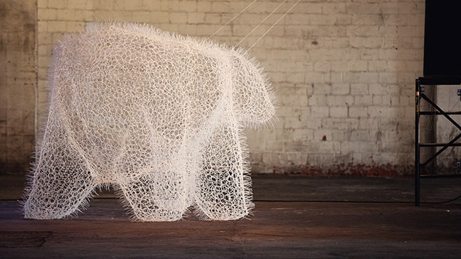

idea

D.O.T.S
http://www.designboom.com/design/design-office-takebayashi-scroggin-zip-tie-massimal/-どんな人
「Design Office Takebayashi Scroggin（D.O.T.S.）」は建築家やデザイナーとして活動しているJason ScrogginとAkariTakebayashiからなる事務所です。
-解説
ケーブルをまとめて配線したりするのに使う結束バンドを大量に用いて、大きな動物を作っています。自立するのには難しく、天井に渡したワイヤーで釣り上げて設置しています。この作品は結束バンドを輪っかにして組み合わせることによって成り立っていますが、ひょろっと出ている余り部分が集合することによって、ふさふさした動物の体毛のような質感が現れています。
-好きなところ
もじゃもじゃしていてやわらかそうな質感でありながら、透明感があるという点が好きです。近づいてみると結束バンドという百均にどこでも売ってそうな材料でつくっているという点もギャップを感じて面白いです。